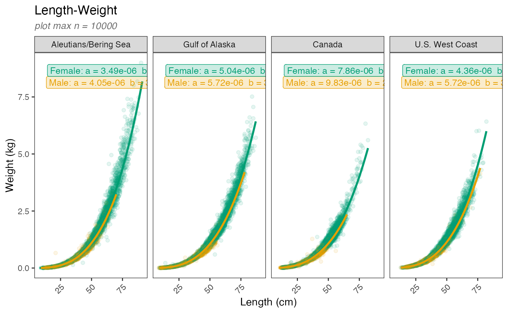
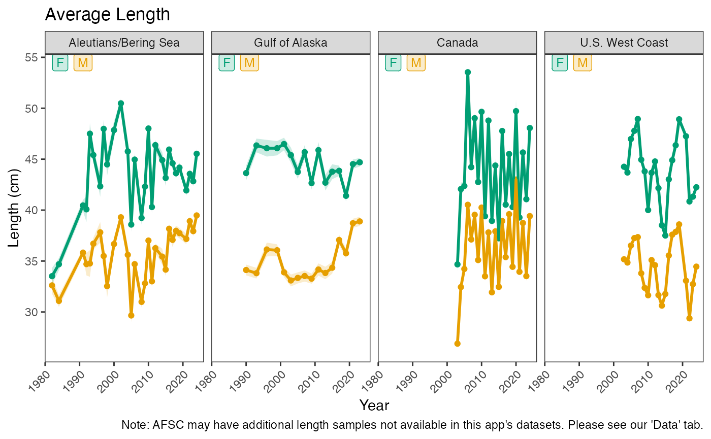

length_weight.RmdThe functions length_weight() and
length_ts() have similar input structures.
length_weight() plots the data and prediction lines for
length-weight relationships of a given species in a given dataset.
length_ts() plots a time series of average lengths by sex
for a given species and dataset. Compatible biological datasets should
first be loaded :
# Pull biological survey data
#individual bio datasets
data(nwfsc_bio)
data(pbs_bio)
data(afsc_bio)
bsai_bio <- afsc_bio |> filter(survey == "AK BSAI")
gulf_bio <- afsc_bio |> filter(survey == "AK GULF")
#to view all
all_data <- bind_rows(afsc_bio, nwfsc_bio, pbs_bio)For length_weight(), the prediction dataset generated
from the model fits are called within the function. The function takes a
biological dataset and the common or scientific name of a species.
head(unique(all_data$common_name))
#> [1] "atka mackerel" "pacific ocean perch" "northern rockfish"
#> [4] "flathead sole" "shortraker rockfish" "sablefish"
head(unique(all_data$scientific_name))
#> [1] "pleurogrammus monopterygius" "sebastes alutus"
#> [3] "sebastes polyspinis" "hippoglossoides elassodon"
#> [5] "sebastes borealis" "anoplopoma fimbria"Input one of the biological datasets to see plots of input species
data for that region/survey. If given data with more than one survey
present, facet_wrap will present plot windows for all 4 possible
surveys. For length_weight(), the argument
subset defaults TRUE to plot a random subset of 10000
points per dataset for plotting speed. To see all available data points,
set as FALSE.
length_weight(data = all_data,
species = "arrowtooth flounder",
subset = TRUE)
#> Note: Plotting a random n = 10000 subset of arrowtooth flounder. Model values not impacted.
length_ts(data = all_data,
species = "arrowtooth flounder")